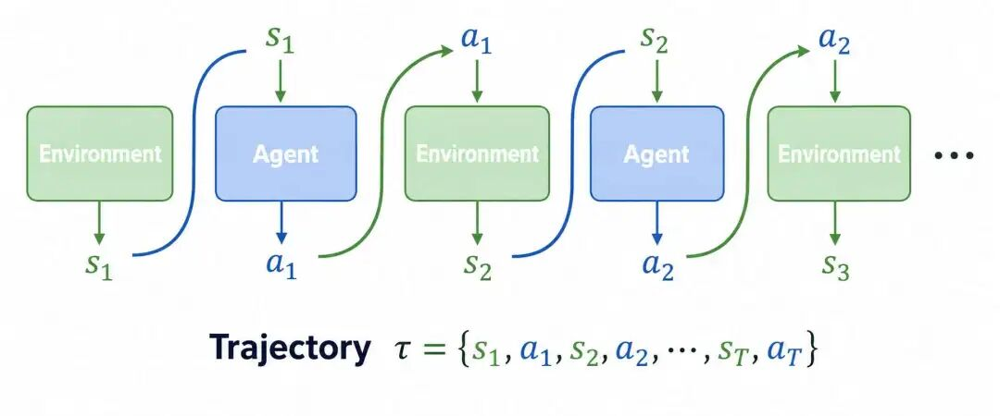
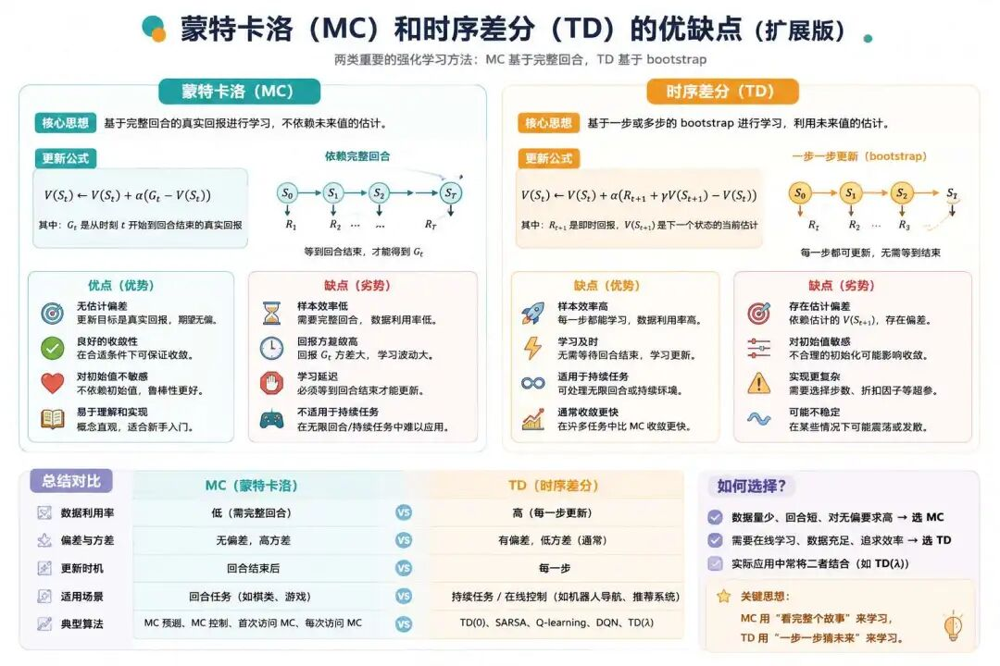

想象力比知识更重要--阿尔伯特·爱因斯坦
蒙特卡洛方法的诞生为强化学习模型训练提供的一种新的见解和思路，即并不需要依赖模型，依据大数定律进行轨迹采样，就能使智能体达到长期奖励最大化的目的。
轨迹：在强化学习中，轨迹（Trajectory） 是指智能体（Agent）与环境（Environment）交互过程中产生的一系列状态、动作和奖励的序列。它就像一部记录智能体一次完整行动的"行车记录仪"，按时间顺序记载了从任务开始到结束的每一个细节。
一条轨迹通常表示为：τ = (s₀, a₀, r₁, s₁, a₁, r₂, s₂, a₂, r₃, ...)，其中： s代表状态，a代表动作，r 代表奖励。

回合：强化学习中回合定义了一个有明确起点和终点的任务周期。绝大多数任务都是以回合形式组织的，例如一盘游戏从开始到胜利或失败，就是一个回合。
资格迹：顾名思义，一种有"资格"的轨迹，在强化学习中表示一种短期记忆机制，用于追踪近期访问过的状态或者是状态-动作对，并且标记哪些因素对当前结果负有"责任"（在后续多步TD与SARSA(λ)中会再次用到）。
蒙特卡洛方法需要完整的交互轨迹才能计算奖励和更新价值函数，它无法单步更新价值函数，这就无法科学的指导动作执行，且在实际的交互过程中容易出现随机抽样的不均匀导致方差大的问题，可以回想撒豆子计算圆周率的过程，豆子的落点极不确定，波动极大，有可能在圆内，也有可能在圆外，影响豆子在圆内的比例，最终影响"圆内豆子数/总豆子数"。
而动态规划虽然可以每步都更新奖励和价值函数，但是却要依赖环境模型，必须提前知道状态转移概率等，这也导致动态规划的实际落地应用的范围太狭隘。
有没有什么办法可以两全其美呢？既不需要提供环境模型，又可以单步就计算出奖励值和状态值呢？
这便是时序差分算法，英文全称为Temporal-Difference Learning, TD Learning，一般简称为TD算法。
时序差分算法是强化学习的核心方法之一，用于在未知环境中通过交互数据来更新值函数（状态价值函数或动作价值函数）。它融合了蒙特卡洛方法无需环境模型和动态规划自举更新的优点，实现了高效在线学习。
它的核心思想是通过"当前奖励+下一步预估值"来模拟未来的总回报。这个思路很巧妙，不需要等到最后结果出来就能做出判断。
它每一步都调整预测值，让预测更接近实际观察到的结果。就像不断校准自己的判断，校准的方法是利用"差值/误差"来学习，用实际发生的情况和预期之间的差距来调整认知。
时序差分算法公式：
$$ V(S_t) \leftarrow V(S_t) + \alpha \left[ R_{t+1} + \gamma V(S_{t+1}) - V(S_t) \right] $$注释版：
$$ \underbrace{V(S_t)}_{\text{更新后状态价值}} \leftarrow \underbrace{V(S_t)}_{\text{原始状态价值}} + \underbrace{\alpha}_{\text{学习率}} \left[ \underbrace{R_{t+1}}_{\text{即时奖励}} + \underbrace{\gamma}_{\text{折扣因子}} \underbrace{V(S_{t+1})}_{\text{下一状态价值}} - \underbrace{V(S_t)}_{\text{原始状态价值}} \right] $$其中 $\underbrace{R_{t+1} + \gamma V(S_{t+1})}_{\text{单步样本目标}}$ 是目标值，而括号内整体为 $\underbrace{R_{t+1} + \gamma V(S_{t+1}) - V(S_t)}_{\text{TD误差}}$，用于衡量预测价值与目标价值的偏差。
先解释一下箭头的含义，向左箭头 ← 在强化学习文献和代码实现中表示赋值（Assignment），其含义表示不断的迭代更新，即自举，强调价值函数随经验积累逐步改进。
然后先看箭头的右半部分：
1、TD目标（Target）： $R_{t+1} + \gamma V(S_{t+1})$ 称为 TD目标（当前奖励与下一状态价值的加权和）
表示当前时刻的实际奖励 $R_{t+1}$ 加上折扣后的下一状态价值估计 $\gamma V(S_{t+1})$ ，是对长期回报的局部估计。
2、TD误差（Error）： $\underbrace{R_{t+1} + \gamma V(S_{t+1}) - V(S_t)}_{\text{TD误差}}$
称为TD误差，衡量当前价值估计 $V(S_t)$ 与更优估计（TD目标）之间的差距，驱动价值函数向更准确的方向调整。
TD时序差分算法的核心之一在于通过单步更新替换贝尔曼方程中的数学期望。期望需遍历所有可能的动作 $a$、下一状态 $s'$ 及奖励 $r$，十分依赖预先具备环境模型：状态转移概率 $P(s'|s,a)$ 和奖励函数 $R(s,a)$。
而通过TD单步更新就可以避免蒙特卡洛方法随机采样导致的大偏差与方差，以及随着不断的增量更新迭代，最终能够逼近当前策略下的真实价值，替代数学期望。你可以理解为样本越来越多，最终趋近于大数定律。
不过TD算法也存在着其局限性，它并不能指导动作的选择，目前它只能评估策略的好坏，因为其本质是一个状态价值函数，而强化学习的目标是"控制"，因此状态价值函数更多情况下是一种评估的手段，要解决现实问题，还需要有一种能够利用TD思想直接优化动作价值函数的手段，这就是我们接下来要谈到的SARSA算法。
SARSA是一种在线策略，又叫同策略的（On-Policy）算法，即智能体会使用与环境交互生成的数据实时更新优化价值函数。
它通过五个元素信息，来驱动更新动作价值函数，那么是哪五个信息呢？
State（状态）、Action（动作）、Reward（奖励）、State（新状态）、Action（新动作），代表更新所需的5个要素，这也是SARSA算法命名的由来。
$$ (s_t, a_t) \xrightarrow{\text{执行}} r_{t+1}, s_{t+1} \xrightarrow{\text{策略选}} a_{t+1} \xrightarrow{\text{更新}} Q(s_t,a_t) $$这一设计将动作选择、策略更新、环境交互、价值更新进行无缝衔接，形成自洽的学习循环。
动作价值函数 $Q_\pi(s,a)$ 本身也满足贝尔曼方程，它建立了当前动作价值与下一时刻状态和动作价值之间的联系：
$Q_\pi(s_t, a_t) = \mathbb{E}[R_{t+1} + \gamma Q_\pi(S_{t+1}, A_{t+1}) | S_t=s_t, A_t=a_t]$
注释版：
$$ \underbrace{Q_\pi(s_t, a_t)}_{\text{策略}\pi\text{下}(s_t,a_t)\text{的动作价值}} = \underbrace{\mathbb{E}[\cdot]}_{\text{期望运算}} \left[ \underbrace{R_{t+1}}_{\text{即时奖励}} + \underbrace{\gamma}_{\text{折扣因子}} \underbrace{Q_\pi(S_{t+1}, A_{t+1})}_{\text{下一状态动作对的Q值}} \mid \underbrace{S_t=s_t, A_t=a_t}_{\text{给定当前状态}s_t\text{和动作}a_t} \right] $$这个方程是SARSA算法的理论基础，它指出当前的 Q 值应该等于即时奖励加上折扣后的下一个状态-动作对的 Q 值。
然后与TD估计 V(s) 类似，我们可以将上述贝尔曼方程左侧 $Q_\pi(s_t,a_t)$ 视为当前估计值。右侧的期望涉及环境转移和策略的随机性，它要求我们知道所有可能的下一个状态和奖励的概率分布（即期望E），这在实际中几乎不可能直接计算。
既然无法计算完美的期望，SARSA采用了一个非常巧妙且务实的方法：用一次真实经验样本来近似这个期望。假设智能体根据策略 $\pi$ 与环境交互，产生了一个经验轨迹 $(s_t, a_t, r_{t+1}, s_{t+1}, a_{t+1})$，然后我们可以用这个样本构造一个TD目标：
$$ y_t = r_{t+1} + \gamma Q(s_{t+1}, a_{t+1}) $$这个TD目标 $y_t$ 是基于真实观测到的奖励 $r_{t+1}$，因此通常被认为比当前的估计值 $Q(s_t, a_t)$ 更可靠。
虽然一次样本可能不准（有随机性），但如果我们用大量样本反复修正，最终Q值就会向着真实的期望收敛。这就是蒙特卡洛思想的运用，即用随机样本去逼近真实值。
接下来，我们鼓励当前的估计值 $Q(s_t, a_t)$ 向TD目标 $y_t$ 靠近。这通过最小化它们之间的误差（即TD误差 $\delta_t = y_t - Q(s_t, a_t)$）来实现。
然后，我们不会完全用目标替换当前估计（那样太激进，因为一次经历可能只是特例），而是朝着目标的方向迈出一小步。这个步长由学习率 α 控制。这就得到了SARSA的更新公式：
$$ Q(s_t, a_t) \leftarrow Q(s_t, a_t) + \alpha [ r_{t+1} + \gamma Q(s_{t+1}, a_{t+1}) - Q(s_t, a_t) ] $$注释版：
$$ \underbrace{Q(s_t, a_t)}_{\text{更新后动作价值}} \leftarrow \underbrace{Q(s_t, a_t)}_{\text{原始动作价值}} + \underbrace{\alpha}_{\text{学习率}} \left[ \underbrace{r_{t+1}}_{\text{即时奖励}} + \underbrace{\gamma}_{\text{折扣因子}} \underbrace{Q(s_{t+1}, a_{t+1})}_{\text{下一状态动作对Q值}} - \underbrace{Q(s_t, a_t)}_{\text{原始动作价值}} \right] $$请注意，这个更新中用于计算TD目标的下一个动作 $a_{t+1}$，正是智能体在状态 $s_{t+1}$ 下实际遵循当前策略 $\pi$ 所选择的动作。这就是"同策略"的体现：算法评估和改进的是它正在执行的那个策略。

接下来我们通过一个生活化的案例，上班族通勤路线的优化来具体应用SARSA算法。
场景设定：
其中：
更新 Q(S₁, 地铁)：$Q(\text{晴天}, \text{地铁}) = 0 + 0.1 \left[ -5 + 0.9 \times Q(\text{雨天}, \text{打车}) - 0 \right] = -0.5$
-> 地铁的Q值降低，未来避免选择。
$Q(\text{雨天}, \text{打车}) = 0 + 0.1 \left[ 10 + 0.9 \times Q(\text{晴天非高峰}, \text{骑车}) - 0 \right] = 1.0$
-> 雨天打车的Q值提升。
经过多次尝试，小王发现：
最终策略收敛，ε-贪婪策略前期多探索（尝试公交/骑车），后期多利用（固定高效方案）。
| 状态（组合） | $A_{地铁}$ | $A_{公交}$ | $A_{打车}$ | $A_{骑车}$ |
|---|---|---|---|---|
| $S_晴$+早高峰+低预算 | 6.2 | 4.1 | -3.0 | 7.5▲ |
| $S_雨$+早高峰+高预算 | 3.8 | 2.0 | 8.9▲ | 0.5 |
| $S_晴$+非高峰+低预算 | 5.0 | 4.8 | -1.2 | 9.0▲ |
| $S_雨$+非高峰+高预算 | 5.5 | 3.5 | 7.0▲ | 2.0 |
假设最终训练得到的Q表：
| Q表策略 | 生活决策逻辑 | 案例参考 |
|---|---|---|
| 雨天高预算选打车 | 避免换乘拥挤，节省时间且舒适 | 上海机场线通勤族愿多花钱买舒适 |
| 晴天非高峰选骑车 | 低成本+健康，非高峰无拥堵风险 | 西安共享单车短途接驳推荐 |
| 早高峰低预算选地铁 | 性价比最优（平衡时间与费用） | 合肥公交优化覆盖地铁盲区 |
我们再来总结一下SARSA算法的核心贡献与其缺陷，从而加深对SARSA算法的理解。
SARSA的核心创新在于其严格遵循当前策略的更新机制，与Q-Learning的离线策略（off-policy）不同，SARSA在更新Q值时依赖实际执行的下一个动作（a'），而非理论最优动作（$\max Q(s',a')$）。这一设计使其更新公式为：
$$ Q(s,a) \leftarrow Q(s,a) + \alpha \left[ r + \gamma Q(s',a') - Q(s,a) \right] $$这种机制保证了策略的一致性：学习过程与行为策略（如ε-greedy）完全绑定，避免了Q-Learning因"想象最优动作"导致的过度乐观风险。
SARSA通过策略依赖的更新机制，天然适配探索性策略（如ε-greedy）。在动态或高风险环境中（如机器人避障、金融交易），SARSA的保守性使其更注重实际交互的安全性，而非仅追求理论最优路径。经典实验（如Cliff Walking）表明：SARSA倾向于选择绕行15步的安全路径，而Q-Learning可能因探索时执行危险动作掉落悬崖（尽管最优路径仅需13步）。
作为早期TD控制算法，SARSA与Q-Learning共同构建了无模型强化学习的算法基石。其设计验证了TD方法无需环境模型（model-free）即可直接优化策略的可行性，为后续算法（如Actor-Critic）提供了理论参考。
我们再来说说SARSA的缺陷有哪些？
SARSA是在策略（on-policy）算法，其更新依赖于当前策略（如ε-greedy）选择的实际动作：
$$ Q(s,a) \leftarrow Q(s,a) + \alpha \left[ r + \gamma Q(s', a') - Q(s,a) \right] $$其中 $a'$ 是下一状态按当前策略选择的动作（可能非最优）。这导致其有风险规避倾向：在存在高回报但高风险路径时（如"悬崖行走"问题），SARSA会因探索中的负奖励而避开最优路径，选择更安全的次优路径。最终策略受探索噪声（如ε>0）影响，无法达到全局最优。
SARSA要求行为策略与目标策略一致，导致旧数据因策略更新而失效，需持续采样新数据，样本利用率低。
这就要求探索参数（如ε）衰减策略需精细设计，过快易陷入局部最优，过慢则收敛延迟。
SARSA的更新依赖实际动作 a'，若环境存在随机扰动（如风干扰移动），动作选择可能偏离预期，导致Q值波动和训练不稳定。
作为在策略算法，SARSA无法利用其他策略（如人类经验或历史数据）生成的数据，限制了其在大规模或高风险任务中的应用。
接下来我们来讲讲强化学习中的两个重要概念，在线策略和离线策略。
在线策略也被称为同策略。在这种模式下，智能体使用当前正在学习和优化的策略（目标策略）来与环境交互并收集数据。这意味着策略一旦更新，旧数据就不再适用，需要重新采样。优点是理论推导简单，梯度估计通常无偏；缺点是样本效率低，因为数据不能重复利用。我们正在学习的SARSA就是典型的同策略算法。
On-Policy 典型算法
On-Policy典型算法除了我们刚刚学习的SARSA算法还有后续将要学习的PPO算法。
（1）SARSA：更新依赖当前策略选择的下一动作 $a_{t+1}$：其中 $a_{t+1}$ 由当前ε-贪婪策略生成，体现"策略闭环"。
（2）PPO：通过剪切目标函数限制策略更新幅度，避免偏离当前数据分布，本质仍是On-Policy，但引入经验缓存提升效率。
也被称为异策略。在这种模式下，智能体可以使用其他策略来与环境交互（行为策略），并用这些数据来优化一个不同的目标策略。优点是样本效率高，可以重复利用历史数据（通过经验回放机制）；缺点是需要处理数据分布不一致的问题，常需重要性采样等技术进行校正。
类比：学员通过观看NBA球星录像学习技巧，无需亲自尝试所有动作。
Off-Policy 典型算法
离线策略的典型算法包含我们后续要学习的Q-Learning和DQN算法。
（1）Q-learning：更新时忽略行为策略的动作，直接采用目标策略的最优动作：体现目标策略的独立性。
（2）DQN：使用经验回放池存储历史数据，通过随机采样打破相关性，提升稳定性
回顾本篇，我们从蒙特卡洛与动态规划各自的"软肋"出发，引出了时序差分这一兼具二者之长的思路：它像动态规划一样能单步更新、不必等到回合结束，又像蒙特卡洛一样无需事先知道环境模型，只凭"当前奖励 + 下一步预估"这一巧妙的组合，就能让智能体在不断试错中逐步逼近真实价值。
而 SARSA 正是把这套思想从"评估状态"推进到"优化动作"的关键一步--它用 State、Action、Reward、State、Action 这五个真实经验要素驱动 Q 值更新，让算法第一次真正具备了"边走边学、边学边控制"的能力。
更重要的是，SARSA 身上体现了一种务实而克制的智慧：它评估和改进的，始终是自己正在执行的那个策略，因此学到的方案天生带着"安全感"--宁可绕一点远路，也不轻易冒掉下悬崖的风险。这种"在策略"的特性是优点也是局限，它换来了稳健，却也牺牲了样本效率和复用历史经验的能力。
理解了这层取舍，我们就为下一步埋下了伏笔：当我们希望智能体更大胆地追逐理论最优、并能反复利用历史数据时，离线策略（Off-Policy）的舞台便徐徐拉开，而它的代表 Q-Learning 与 DQN，正是我们接下来要探索的方向。
时序差分（Temporal-Difference, TD） ：一类无需环境模型、可单步更新价值函数的强化学习方法。它融合了蒙特卡洛"靠采样、不依赖模型"与动态规划"自举更新、不必等回合结束"两者之长，用"当前奖励 + 下一步价值预估"来近似长期回报，是连接二者、并支撑起后续众多算法的核心思想。
自举（Bootstrapping） ：在更新当前估计时，部分地依赖于另一个估计值，而非完全等待真实的最终结果。TD 用 或 来更新 或 ，正是自举的体现。它换来了单步更新的高效率，但也引入了一定偏差，是 TD 与蒙特卡洛在"偏差-方差"权衡上的分水岭。
TD 误差（TD Error, δ） ：衡量当前价值估计与"更优估计"（即 TD 目标）之间差距的量，定义为 。它是驱动价值函数迭代更新的引擎--误差越大，调整幅度越大；当误差趋近于零，价值估计便收敛到了真实值。
动作价值函数（Action-Value Function, Q） ：在策略 π 下，从状态 s 出发、执行动作 a 后所能获得的未来累积折扣奖励的期望，记作 。相比只评估状态好坏的状态价值函数 V，Q 函数直接刻画了"在某状态下选某动作"的价值，因而能够直接指导动作选择，是从"评估"走向"控制"的关键。
在策略与离线策略（On-Policy / Off-Policy） ：区分强化学习算法的一对核心概念。在策略算法（如 SARSA、PPO）用当前正在优化的策略本身去采集数据，逻辑自洽但样本利用率低；离线策略算法（如 Q-Learning、DQN）允许用其他策略采集的数据来优化目标策略，可复用历史经验、样本效率更高，但需处理数据分布不一致的问题。